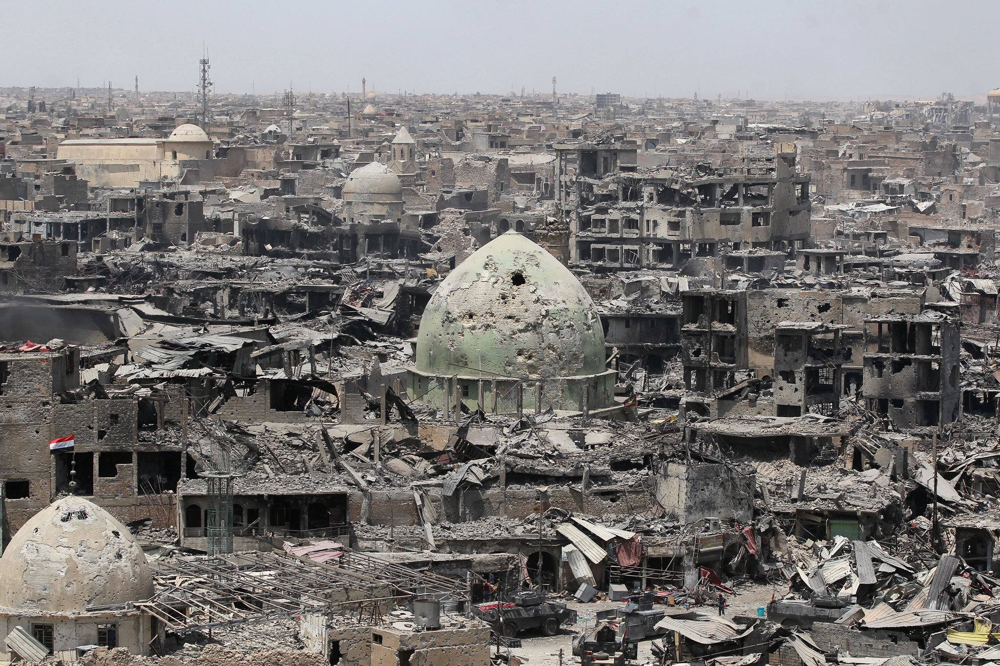

What is "fragility?"
The OECD’s 2015 States of Fragility report defines state fragility as a “combination of exposure to risk and insufficient coping capacity of the state, system and/or communities to manage, absorb or mitigate those risks.”
But this simple definition belies the huge and varied number of factors that can figure into fragility, such as the ability of the state to provide basic services equitably across groups, guaranteeing the personal security of a state’s citizens, ensuring the freedom of those citizens from state oppression, enshrining the ability of those citizens to make economic and life choices, as well as many other factors that are difficult to quantify.
Image: Mosul, Iraq in 2017. Source: The New York Times.